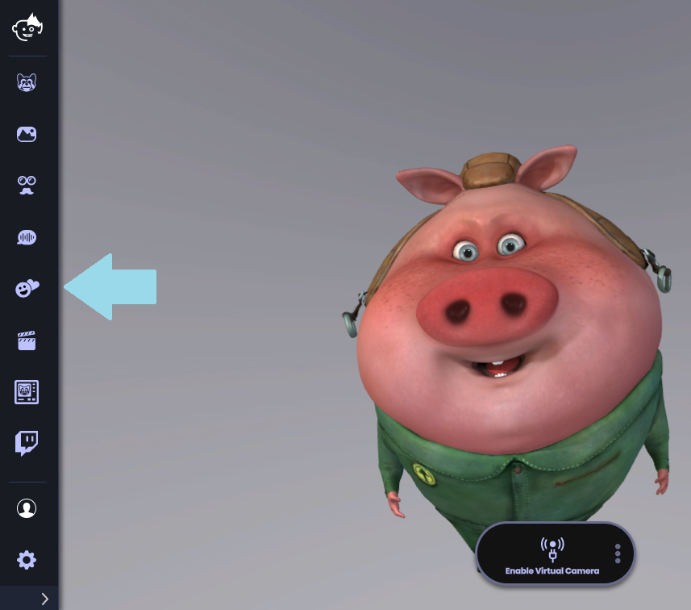
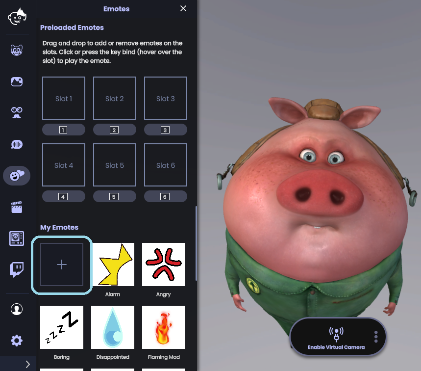
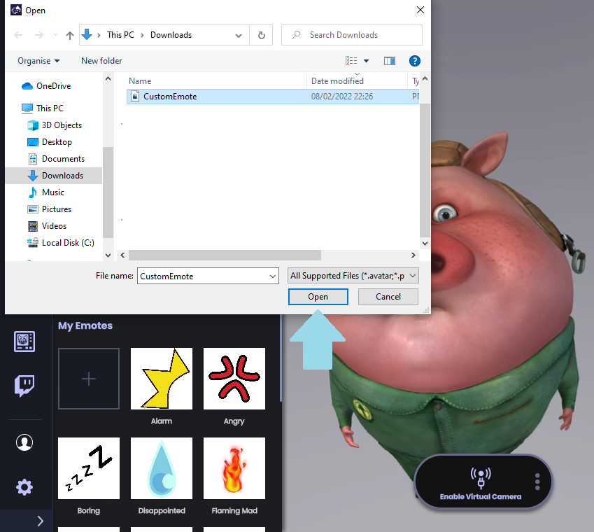
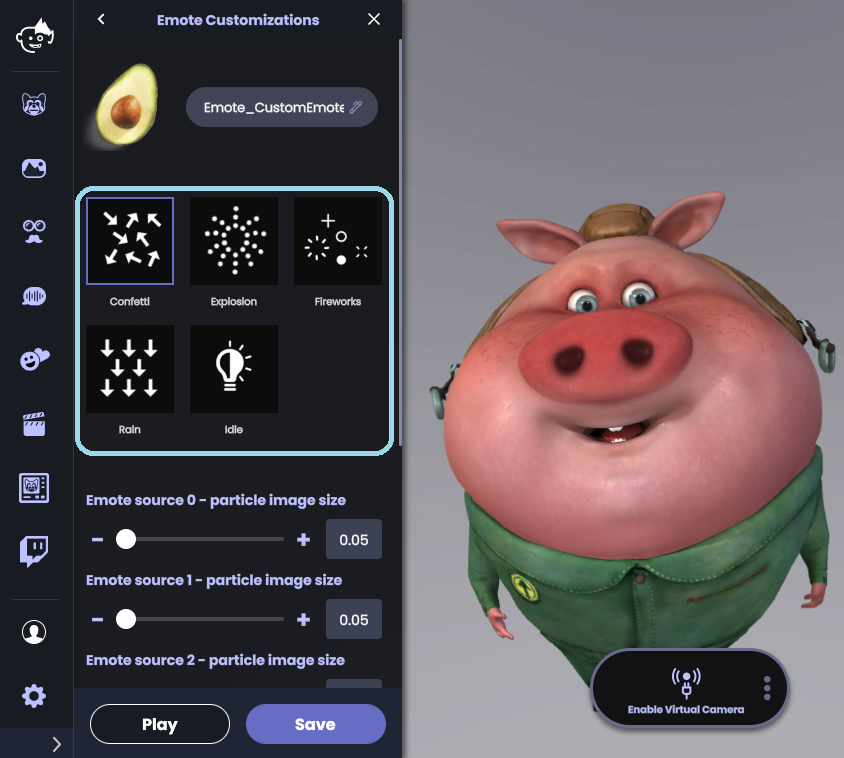
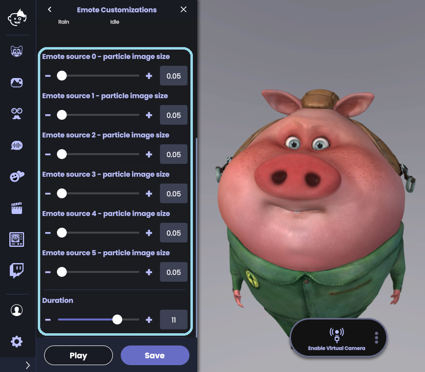
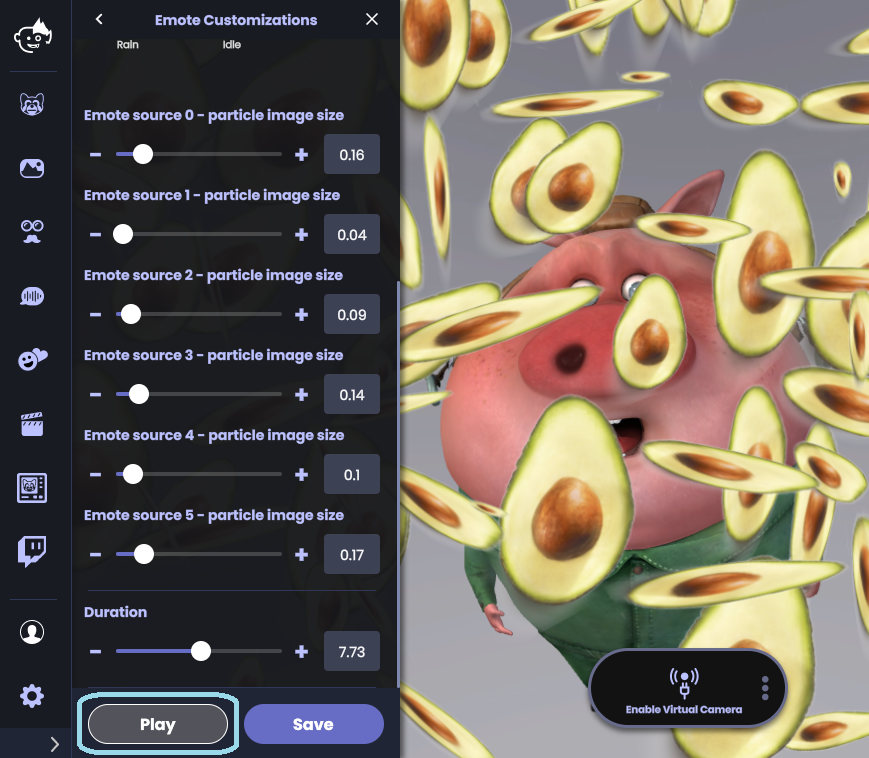
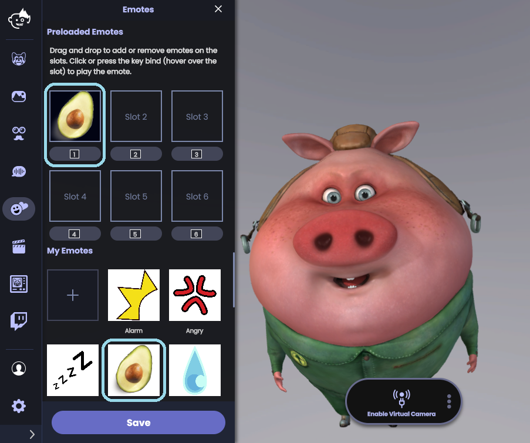

Animaze Desktop: How can I use the Animaze custom emotes?
You can now upload and use custom emotes with Animaze! Load any .png .jpeg, etc. into Animaze and use them to spice up your streams and content (we recommend using .png files since they have a transparent background and will look more seamless when they are played). Here is how to do that:
After you launch Animaze, click on the Emotes icon

After the Emotes menu drawer will appear on the screen, click on the + button and browse for your desired .png file


Once you have loaded the file, the Emote Customizations drawer menu will appear. From there you will be asked to choose how to play your Custom Emote. You can choose from five different Emote animations:
-
Confetti
-
Explosion
-
Fireworks
-
Rain
-
Idle

Each animation has various sliders that will change its size and duration. As an example, we will use the Confetti animation:

After making the desired changes, click on Play to play the emote; click on Save to save the changes

Your new Emote will appear under the My Emotes section. You can click, hold and drag it over a slot to assign it to a key in your Preloaded Emotes.
